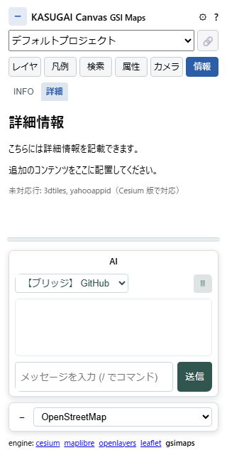

マルチエンジン
web/ をエンジン別フロントに分割し、.kasc プロジェクトを複数の地図エンジンで再生できる構成です。メインエンジンは CesiumJS（開発の主対象・既定エンジン）で、MapLibre / OpenLayers / Leaflet / GSI Maps（※現在調整中）は .kasc プレイヤーとしての互換実装です。プロジェクトデータ（projects/）はエンジン非依存で、描画に依存しないコードは web/shared/ に集約しています。
ねらい: 同じ .kasc を「高機能3D（Cesium）」「軽量2D（Leaflet 等）」「地理院地図の UI（GSI Maps）」など、配布先の環境・用途に合ったエンジンで開けます。納品物は .kasc+DATA/+エンジン一式の静的ファイルだけで成立し、受け取り側がエンジンを選ぶ余地も残せます。
🧭 エンジン構成
| フォルダ | エンジン | 位置づけ・対応範囲 |
|---|---|---|
cesium/ |
CesiumJS（メイン・既定） | 全行タイプ（3dtiles: 含む）・FLY・AI ツール・プラグイン・地形/DEM ドレープ・SCENE2D。KASUGAI の全機能が集約される唯一のフル機能エンジン |
maplibre/ |
MapLibre GL（2D プレイヤー） | WebGL ベースの 2D エンジン。全ベクター行・QML・duckdb/sql・属性 UI・6 タブパネル。3dtiles: は deck.gl Tile3DLayer を遅延ロードし、TerrainExtension による 3D Tiles 表面ドレープにも対応。回転・傾斜表示可 |
openlayers/ |
OpenLayers（2D プレイヤー） | OGC 準拠最良の 2D エンジン。MapLibre 相当の .kasc 再生（QML・duckdb/sql・属性 UI）。Canvas レンダリングで WebGL 要件が緩い |
leaflet/ |
Leaflet（2D プレイヤー） | 約 40KB の超軽量 2D エンジン。WebGL 不要の DOM/SVG 描画で古いブラウザでも動作。専用 pane にレイヤーを割り当てて .kasc の積み順を再現（回転系設定なし）。3dtiles: は deck.gl オーバーレイキャンバスで遅延ロード |
gsimaps/ |
GSI Maps（中間エンジン・調整中） | vendored 地理院地図（gsi-cyberjapan/gsimaps）を同一オリジン iframe で組み込み、.kasc を GSI/Leaflet API 経由で再生。上流コードは無改変で、変換・制御はすべて中間層が担う（下記「GSI Maps エンジン」節） |
各エンジンの特性比較と追加候補の評価は ライブラリ — 地図エンジンの選定と追加候補 を参照してください。
🔀 エンジン選択と切替
?engine=リダイレクト: ルートのweb/index.htmlは?engine=cesium|maplibre|openlayers|leaflet|gsimaps（既定 cesium）を読み、対象エンジンのindex.htmlへリダイレクトします。engine以外のクエリ（project=・kasc=）とハッシュ（ビュー状態）はそのまま引き継ぐため、同じ URL をエンジンを変えて開き直せます- 切替 UI: 各エンジンのパネルにある「engine:」リンク（
shared/engine-switch.js）から別エンジンへ遷移します。現在のクエリとハッシュを引き継ぐため、プロジェクトとカメラ位置を保ったまま切り替えられます（リンクは../?engine=…の相対パスで、GitHub Pages 等のパスプレフィックス配信でも動作） - レイヤ状態の引継ぎ: 切替直前にインスペクターの .kasc テキスト・テーマ選択・各レイヤの可視性を localStorage へ一時保存し、切替先が起動時に一度だけ消費します（TTL 120 秒・URL の project/kasc が一致したときのみ適用）。切替元で加えた未保存の編集や表示切替が切替先にも反映されます
- URL ハッシュの互換: カメラ状態のハッシュ形式はエンジン共通です（緯度・経度・高さに加え、2D 側は zoom を併記。heading/pitch は各エンジンの規約へ相互変換）。変換規則の詳細は V0: システム基本構成 — URL パーマリンク を参照
🧩 エンジン非依存コア（web/shared/）
エンジン横断のコードは shared/ に集約し、各エンジンの app.js は描画層と薄いアダプタを持つ構成です。新しい 2D エンジンの追加は「shared の各モジュールを使い回し、描画フックだけ実装する」形で行えます。
kasc.js— .kasc 行パーサー＋プロジェクトローダー。cam↔zoom 変換・URL ビュー読み書き・テーマ（theme:）・ブックマーク（cam:行 / QGIS XML）・?kasc=直読みを担当vector-load.js/vector-decode.js/gpkg-worker.js— ベクター系行タイプ（geojson:/geoparquet:/flatgeobuf:/gpkg:/csv:/duckdb:/sql:等）を GeoJSON FeatureCollection へ正規化するローダー。GPKG は sql.js(SQLite WASM) Worker で別スレッド処理qml-style.js/qml-2d.js— QGIS レイヤースタイル（.qml）のコンパイルと 2D エンジンへの適用アダプタattr-widget.js— 画面下部にドッキングする属性テーブル（レイヤ選択・全文検索・列ソート・行クリック移動）player-api.js— 2D プレイヤー向けのwindow.kasugaiApiアダプタ。各エンジンの共通構造（レイヤリスト＋描画フック）へ API 面を構成し、AI チャットの公開ツールは api メソッドの有無で自動絞り込みai-chat.js/mcp.js/box.js— エンジン横断の AI チャット基盤（プロバイダ接続・ツール実行・MCP リモートサーバー接続・Box OAuth）engine-switch.js— 切替 UI とレイヤ状態引継ぎ（上記）print.js— 印刷・帳票出力（地図画像化→タイトル/凡例/縮尺/方位/出典の帳票合成）i18n.js+i18n/— 共有の翻訳辞書と適用機構deck-drape.js/deck-ground.js— 2D エンジン上の deck.gl 3D Tiles 表示（ドレープ・自動接地）localfs.js—?kasc=localのローカルフォルダ直読み（File System Access API・後述）kasc_loader.js— geo_webview が生成するビューア HTML へのインライン埋め込み用 .kasc ローダー
🗺️ 2D プレイヤー（MapLibre / OpenLayers / Leaflet）
3 エンジンはほぼ同機能の .kasc プレイヤーで、左パネルの 6 タブ（レイヤ・凡例・検索・属性・カメラ・情報）＋表示・インスペクター・AI の各タブを持ちます。
- 対応行タイプ: 全ベクター行（
geojson:/layer:/geoparquet:/flatgeobuf:/gpkg:/csv:/tsv:/duckdb:/sql:）、ラスタ行（base:/xyz:/wms:/wmts:）、cam:/legend:/info:/theme:/3dtiles:。3dtiles:は deck.gl Tile3DLayer を含む .kasc のときだけ CDN から遅延ロードし、軽量プレイヤーを維持します - 3D Tiles ドレープ: MapLibre では deck.gl TerrainExtension により 2D データを 3D Tiles 表面へ貼り付け可能（Cesium 版の「ドレープ対象地形=3D Tiles」相当）。
deck-ground.jsの自動接地で絶対高を持つタイルセットを z≈0 に補正します（ground=offで無効化・zoffset=で手動補正） - QML スタイル:
style=の .qml をコンパイルして各エンジンのスタイルへ適用（単一/分類/段階/ルールレンダラ・ラベル・凡例スウォッチ） - 属性・検索: 地物クリックの属性表示、属性値一覧ウィジェット、ベクター属性検索、カメラタブ（cam: プリセット・QGIS XML 読み書き）
- AI チャット:
player-api.jsが提供する kasugaiApi アダプタ経由で共通の AI チャットを利用（公開ツールはエンジンの実装済み api に応じて絞られる） - 未対応行の扱い: そのエンジンで再現できない行タイプはパネルに「未対応行: …（Cesium 版で対応）」と警告表示されます
🗾 GSI Maps エンジン（地理院地図組み込み・調整中）
vendored 地理院地図（web/vendor/gsimaps/・上流無改変）を同一オリジン iframe（index_pm.html）として組み込み、左の中間層パネルが .kasc を GSI/Leaflet API 経由で再生します。

※現在調整中: iframe 内の vendored コードを GSI.GLOBALS 内部 API 経由で操作する構造のため AI 制御の安定化が難しく、本エンジンの挙動・ツール仕様は今後変更される可能性があります。
- .kasc → gsimaps の対応: ベクター系行は GeoJSON へ変換して作図リスト（SakuzuListItem）として注入（スタイルは
_-props へ畳み込み）。base:/xyz:/wms:/wmts:は外部タイル（appendOutSideTile）として追加し、地理院タイルのベースは gsimaps 標準ベースマップへマップします。cam:は URL ハッシュと setView、theme:は可視性プリセットとして処理。3dtiles 等の非対応行は情報タブへ警告します - Globe 表示: 上流の「Globe」起動（window.open）をフックして iframe 内表示へ差し替え、左パネルを維持します。Globe は Cesium アプリのため、読み込み済みの .kasc レイヤを viewer へ注入して 3D 表示でき、可視性も双方向で同期します。表示中の視点は親 URL ハッシュへミラーされ、「← 2D地図に戻る」で視点を引き継いで復帰します
- レイヤ取り込み: 「地理院地図の表示レイヤを取り込み」ボタンで、地理院地図側で表示中のレイヤを
xyz:行の Canvas レイヤとして .kasc へ追記できます（Globe 表示中は不可） - AI ツール群: 地理院地図の操作は専用ツール17本で AI 制御できます（AI ツール仕様）。表示中レイヤの一覧・取り込み（
listGsiLayers/importGsiLayers）、透過率・積み順・解除（setGsiLayerOpacity/moveGsiLayer/removeGsiLayer）、カタログ検索・表示・直接取り込み（listGsiCatalog/addGsiLayer/importGsiCatalog）、作図取り込み（listGsiSakuzu/importGsiSakuzu）、ベースマップの一覧・切替（listGsiBasemaps/setGsiBasemap。切替はbase:行を .kasc へ自動追記し、他エンジンでも同じベースが再現されます）。ほかに表示中レイヤの一時非表示（setGsiLayerHidden）・作図削除（removeGsiSakuzu）・地点標高取得（getGsiElevation）もあります）。地理院地図側の UI 自体もdata-ui-bridge経由で汎用listUiControls/controlUiの対象になります - ベンダー管理: vendor 実体（約75MB）はリポジトリ・配布 ZIP・インストーラーに同梱せず、CDN（kasugai-canvas-web 各ステージ）へ
gsimaps/vendor.jsonの sha でピンして配置します。ローカルアプリ（:8510）は/vendor/*のミスを CDN へプロキシして同一オリジン供給するため、vendor 未配置でも gsimaps はローカル URL のまま動作します（CDN 不通時のみ従来通りホスト版へ転送。転送先はKASUGAI_VENDOR_CDN_BASEで上書き可）。オフライン開発等で実体が必要な場合のみtools/fetch_vendor.pyで取得してください（ローカル実体が優先されます）。同梱トークンについて:globe/Build/Cesium*には Cesium 公式の公開デフォルトトークン（Mapboxpk.トークン・ion の JWT）が含まれます。これは Cesium が全配布物に同梱する公開仕様（利用時は「自前トークンを設定せよ」の警告を出力する既定動作）であり、シークレットスキャン（detect-secrets・GitHub Push Protection）では false positive として扱います — detect-secrets は.secrets.baseline、GitHub 側は unblock URL の許可で対応済み
📄 プロジェクト直読み（?kasc=）とサーバレス配信
?kasc=<url>: 全エンジンで任意 URL の .kasc を直接読めます。DATA/等の相対参照は .kasc のある URL 基準で解決され、projects/構造は不要です。.kasc+DATA/+起動 HTML とweb/の中身を同じ静的サーバーへ置くだけで配信できます（登録 API 不要）?kasc=local: 2D プレイヤー系エンジンでは、File System Access API で選択したローカルフォルダの.kasc+DATA/をlocalfs:///疑似 URL＋fetch シムで読めます（ホスト版エンジンがローカルフォルダを直接開く「アプリはホスト・データはローカル」の構造）。フォルダハンドルは IndexedDB に永続化されます。Chromium 系限定・フォルダ外参照不可・ローカル XYZ タイルは未対応- geo_webview 連携: QGIS geo_webview のエクスポートは各エンジン用の
<engine>.html（エンジン自動探索・CANVAS_BASE上書き可）とリンク一覧のindex.htmlを .kasc と同じ場所へ出力します。file://で開いた場合は起動中のローカル Canvas（127.0.0.1:8510）へプロジェクトを登録して開きます
🌐 CDN ホスト版（kasugai-canvas-web）
エンジン一式（web/）を CDN ライブラリのように静的配信する専用ホストが kasugai-canvas-web（GitHub Pages）です。「アプリはホスト・データはローカル（または任意 URL）」の構造で、KASUGAI Canvas 未インストールの環境でも .kasc+DATA/ をブラウザ再生できます。
- 起動形式:
…/kasugai-canvas-web/<stage>/<engine>/?kasc=<url>。各ステージ配下に全エンジン（cesium・maplibre・openlayers・leaflet・gsimaps）が同居し、ステージルートの?engine=でも選択できます。?kasc=localならローカルフォルダの .kasc を直接開けます（ホストされたエンジンがローカルのデータだけを読む、CDN ライブラリと同じ使い方） - 2チャンネル:
stable/（既定・リリース版）とunstable/（kasugai_canvas 側mainの最新web/追従）。channels.jsonと各ステージのversion.jsonがバージョン表です - 正本と同期: 正本は kasugai_canvas 側の
web/で、CDN リポジトリは発行物のみ（直接編集しない）。同期はpython tools/publish_cdn.py --channel unstable|stableで行い、どちらのチャンネルもweb/を直接同期します（unstable 経由の格上げではない）。運用は「web/ に配信したい変更 → unstable 同期・リリース時に stable 同期」 - gsimaps の vendor 配置: 各ステージへ同期する際、
web/vendor/実体（地理院地図）もvendor.jsonの sha に従って配置されます（ローカルアプリはこの CDN vendor を/vendor/プロキシ経由で同一オリジン供給） - ローカルアプリ連携（バックエンド検出）: 同一オリジンにバックエンドが無い静的配信では、起動中のローカルアプリ（
127.0.0.1:8510）を自動検出し、/api/*・/projects/*をそちらへ向けます。ホスト版でも AI ブリッジ（Copilot/Devin/Antigravity）や外部登録プロジェクト（QGIS 出力の .kasc+DATA/）・fileWrite/fetchProxy が使えます。Chrome の「ローカルネットワークアクセス」権限が求められたら許可してください（許可で自動リロードして有効化。拒否時は静的機能のみ） - 利用者向けガイド: エンジン説明・QGIS からの出力手順はホスト側の guide/ に集約しています
⚙️ 開発ルール（マルチエンジン前提の設計）
- メインエンジンは CesiumJS: 新機能・UI 整備・AI 制御対応はまず Cesium フロントを対象とし、他エンジンは .kasc プレイヤーとしての互換実装です（Cesium 側の機能追従は必須ではありません）
- コードの置き場: エンジン横断コードは
shared/、エンジン固有コードは各エンジンフォルダへ置きます - AI 制御の共通化: 2D プレイヤーは
player-api.jsの kasugaiApi アダプタで API 面を揃え、AI ツールは実装済みメソッドの有無で公開可否が決まります - パスの起点: API・データパスは
/api/*・/projects/*・/healthのルート起点で書きます（ページ相対はエンジン配下で壊れるため）。認証・公開パスの許可リストは/cesium/起点で、新エンジン公開時は同様に更新します - vendor の無改変原則:
web/vendor/配下は上流スナップショットで一切改変しません。挙動変更は組み込み側（中間層）でフック・差し替え・ラップします